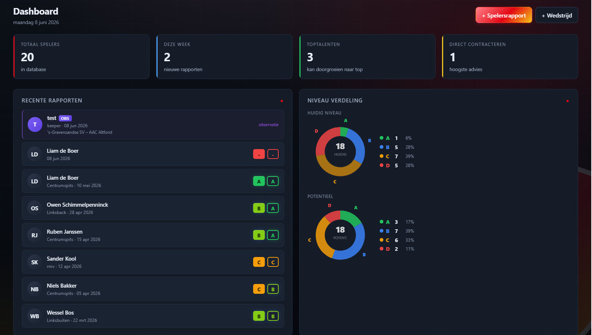
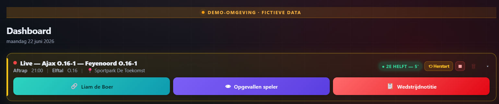
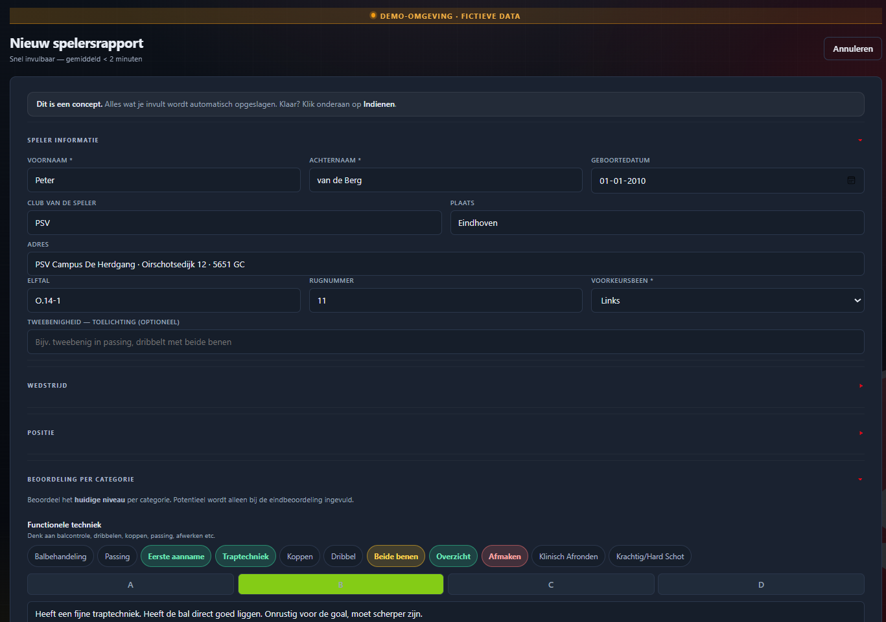
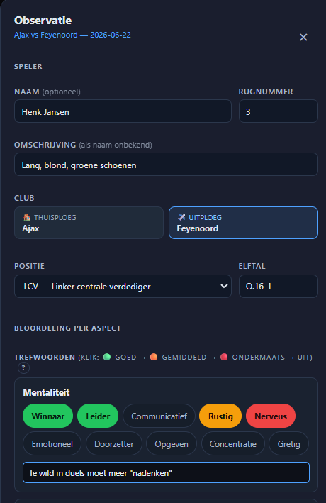
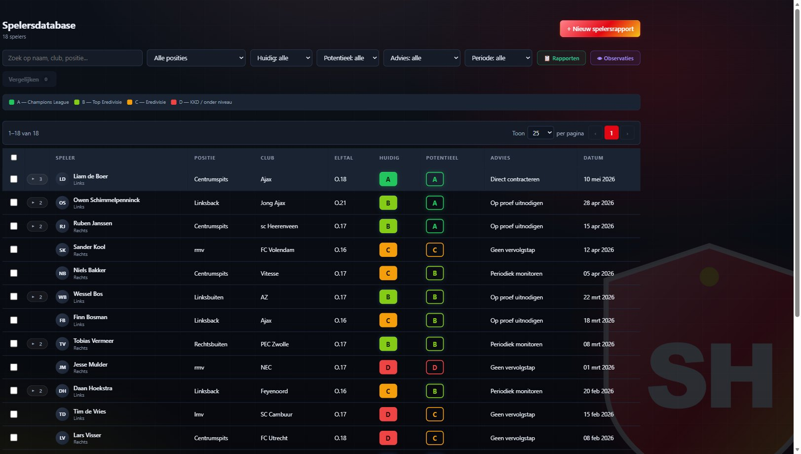
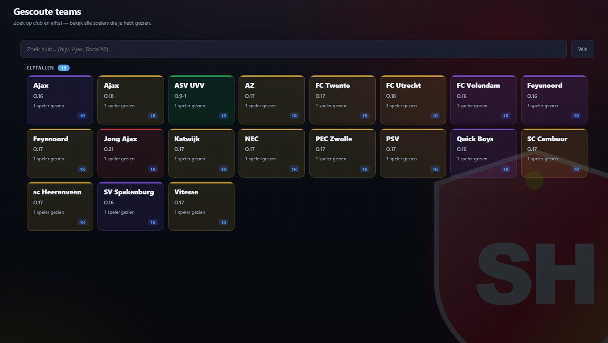

Observeer razendsnel langs de lijn, analyseer gestructureerd met data en rapporteer met impact. Voor scouts, clubs en academies die serieus willen scouten.

Observeren. Analyseren. Rapporteren.
Zo werkt het
Van eerste observatie tot onderbouwd advies.
Eén tik. Binnen 5 seconden een beoordeling.
Beoordeel spelers met trefwoorden langs de lijn. Groen, oranje, rood, geen toetsenbord nodig. Snel, objectief, consistent.

Live scouten direct langs de lijn.
Volg wedstrijden in real-time. Noteer per speler, per aspect. Alles wordt automatisch bewaard, jij focust op het spel.


Bespaar uren aan rapportages.
Je observaties worden automatisch klaargezet als concept-rapport. Beoordeel, vul aan, dien in. Professioneel en compleet.
Vergelijk talenten op basis van harde criteria.
Zet spelers naast elkaar. Radar-charts, head-to-head, criteriumscores. Data die je advies onderbouwt.

Vind direct het juiste talent terug.
Al je spelers in één database, met niveau, potentieel en advies. Filter, zoek en vind het talent dat je zoekt.

Je complete scoutingnetwerk in één oogopslag.
Al je gescoute teams in één oogopslag, per club, leeftijdscategorie en aantal rapporten. Zo houd je grip op je hele scoutingnetwerk.
Alles wat een scout nodig heeft
Eén platform. Geen compromissen.
⚡
Snel observeren
Beoordeel spelers met chips langs de lijn. Eén hand, één tik, één beoordeling. Geen afleiding van het spel.
🏆
Toernooi-modus
Importeer elk toernooi, plan je schema, scout meerdere wedstrijden per dag. Eén overzicht, geen chaos.
📊
Objectief vergelijken
Zet spelers naast elkaar met harde data. Radar-charts, head-to-head, criteriumscores. Onderbouw je advies.
📋
Professioneel rapporteren
Van live-notities naar een volledig rapport. Niveau, potentieel, advies, alles in één document. Klaar om te delen.
📱
Werkt overal
Installeer op je telefoon, geen app store. Werkt offline langs de lijn. Synchroniseert zodra je verbinding hebt.
🔒
Jouw data, jouw controle
Alleen jij ziet je observaties en rapporten. Strikt privé. Geen gedeelde databases. Jouw scouting blijft van jou.
🚗
Ritten & declaraties
Registreer je kilometers automatisch. Exporteer als PDF-declaratie. Administratie zonder gedoe.
🏟
Clubs & locaties
Het complete adresboek van het Nederlandse jeugdvoetbal. Clubs, sportparken, contactpersonen, altijd bij de hand.
Voor clubs en academies
Één platform voor je hele scoutingstaf.
👥
Meerdere scouts, één overzicht
Elke scout werkt in zijn eigen omgeving. De coördinator ziet rapporten van zijn team. Het hoofd ziet alles.
📋
Uniforme rapportages
Alle scouts gebruiken hetzelfde format. Direct vergelijkbaar en klaar voor de technische commissie.
📊
Inzicht per leeftijdscategorie
Hoeveel wedstrijden gescout? Welke clubs gevolgd? Per team, per periode. Altijd grip op je scoutingnetwerk.
🔒
Privacy per scout
Elke scout beheert zijn eigen data. Alleen wat gedeeld is, is zichtbaar voor de organisatie. AVG-proof.
Hoofd Jeugdscouting / Hoofd Jeugdopleiding
Inzicht in alle rapporten van de organisatie (alleen-lezen)
👥
Coördinator – Team A
Plant wedstrijden & ziet rapporten van het eigen team (alleen-lezen). Kan ook eigen database opbouwen.
🔍
Scout 1
Bouwt eigen database en rapporten op
🔍
Scout 2
Bouwt eigen database en rapporten op
👥
Coördinator – Team B
Plant wedstrijden & ziet rapporten van het eigen team (alleen-lezen). Kan ook eigen database opbouwen.
🔍
Scout 3
Bouwt eigen database en rapporten op
🔍
Scout 4
Bouwt eigen database en rapporten op
Van observatie naar advies
📅
Plan
Maak een wedstrijd aan of importeer een toernooi.
→
👀
Scout
Observeer langs de lijn met chips en notities.
→
📋
Rapporteer
Je notities staan klaar als concept-rapport.
→
⚖
Beslis
Maak objectieve, onderbouwde keuzes op basis van data, niet op onderbuikgevoel.
Waarom jeugdscouts kiezen voor ScoutingHub
⏱
Direct klaar na het fluitsignaal
Geen urenlange administratie meer op zondagavond. Omdat je tijdens de wedstrijd met één tik scoort, staat je concept-rapport bij het laatste fluitsignaal al voor 90% klaar.
⚖
Geen discussie meer op onderbuikgevoel
Mensen herinneren zich vaak alleen de allerlaatste actie van een speler. Door criteria systematisch vast te leggen, ontstaat er een eerlijk en consistent beeld over de hele wedstrijd.
🔒
Alles in één veilige database
Geen rondslingerende notitieboekjes of Excel-lijsten die kwijtraken. Jouw scoutingdata is strikt privé, veilig opgeslagen en direct vindbaar wanneer de technische commissie erom vraagt.
“Gebouwd voor scouts, door scouts.”
ScoutingHub is ontwikkeld vanuit de dagelijkse praktijk van het jeugdvoetbal. Elke functie is getest langs de lijn, bij toernooien en in de bestuurskamer.
Onze missie
Scouting professionaliseren in het Nederlandse jeugdvoetbal.
ScoutingHub is geboren uit de dagelijkse praktijk. Te veel scouts werken nog met notitieboekjes, Excel-lijsten en WhatsApp-berichten. Het resultaat: subjectieve keuzes, verloren data en rapporten die nooit worden gelezen.
Wij geloven dat elke scout, van amateur bij een lokale club tot professioneel staflid bij een eredivisieacademie, recht heeft op professioneel gereedschap. Data die klopt. Rapporten die overtuigen. Beslissingen die onderbouwd zijn.
Gebouwd door scouts, voor scouts.
Klaar om het verschil te maken?
ScoutingHub is momenteel exclusief op uitnodiging beschikbaar. Vraag direct toegang aan en ontvang binnen 24 uur jouw persoonlijke inloggegevens om te starten.
ScoutingHub
Professional Edition
Overzicht•Inzicht•Controle
Concept-records debug
—
ScoutingHub installeren
Volg deze stappen om de app te installeren:
Instellingen
Account
Je inloggegevens
E-mailadres—
Rol—
Team—
Beheer
Open het admin-paneel voor gebruikersbeheer
App installeren
Voeg ScoutingHub toe aan je startscherm of bureaublad
Profielfoto
Wordt zichtbaar in de zijbalk
SH
JPG of PNG. Wordt veilig opgeslagen — zichtbaar in de zijbalk.
Persoonsgegevens
Telefoon, adres en voorkeuren — alleen voor jou zichtbaar
Plak een rapport-blok of een volledig export-bestand. ScoutingHub herkent automatisch spelersrapporten, wedstrijdrapporten en elftal-analyses, en stuurt elk item naar de juiste plek.
Vul een URL in om een toernooi te importeren. Laat leeg voor JSON import hieronder.
0 spelers0 wedstrijden0 analyses0 programma
Exporteren
Kies welke onderdelen je wilt opnemen. Je downloadt één JSON-bestand met alleen je selectie.
0 onderdelen geselecteerd
Demo-omgeving · fictieve data
Dashboard
—
Recente rapporten
●
Niveau verdeling
●
Huidig niveau
Potentieel
Te volgen talenten
●
Club overzicht
●
Positiedekking ●
Advies verdeling ●
Gemiddelde beoordeling per categorie
●
Elftal analyse
●
Overzichtsmap
●
Steden
Spelersdatabase
0 spelers
A — Champions League
B — Top Eredivisie
C — Eredivisie
D — KKD / onder niveau
Gescoute teams
Zoek op club en elftal — bekijk alle spelers die je hebt gezien.
Spelers vergelijken
Selecteer 2 tot 6 spelers en zie ze naast elkaar — radar, balken, gauges en details.
Selecteer minstens 2 spelers
Klik op een lege plek hierboven of zoek hieronder een speler om toe te voegen.
TotaalindrukHuidig & potentieel niveau
Niveau-matrixHuidig vs. potentieel — klik een speler om het profiel te openen
Head-to-HeadCriterion voor criterion — winner per rij gemarkeerd
Radar — 7 criteriaHoe groter de vorm, hoe completer de speler
Criterium-balkenZij-aan-zij per criterium
Scout-notities per criteriumAlle notities naast elkaar · ster = beste score op dat criterium
Parallelle coördinatenElke speler = een lijn door alle 7 criteria — hover voor waarden, klik om te isoleren
Database rankingHoe scoort elke speler ten opzichte van alle gescoutede spelers?
Advies per spelerAanbeveling op basis van rapporten
Sterkste puntenTop criteria & aandachtspunten per speler
Detail-vergelijkingKlik op een speler om het volledige rapport te openen
Spelers toevoegen
Speler toevoegen
0 / 6
Positie
Huidig
Potentieel
Leeftijd
Provincie
Wedstrijden
0 wedstrijden
0
Totaal
0
Verwerkt
0
Nog te verwerken
Nog geen wedstrijden bekend
Wedstrijden verschijnen automatisch zodra je een rapport opslaat met thuis- en uitspelende ploeg. Of begin nu met een nieuw wedstrijdrapport.
Programma
Plan je scoutingweek
Programma
Niets ingepland voor deze dag.
Klik op + Afspraak inplannen om te beginnen.
Agenda
Wedstrijden per uur — sideline-overzicht
—
Nieuw spelersrapport
Snel invulbaar — gemiddeld < 2 minuten
Elftal analyse
Overzicht van alle elftal analyses
Analyse
Open posities
⚽
Klik op een positie in het veld om criteria in te vullen en spelers te koppelen.
Contactpersonen
Overzicht van trainers, scouts, ouders en andere contacten
Nog geen contactpersonen.
Voeg trainers, scouts of ouders toe via de knop Nieuw contact.
Clubs & locaties
Alle clubs uit de databank — klik op een kaart voor route in Google Maps
Geen clubs in databank.
De clubdatabank lijkt leeg. Herlaad de app.
Getipte spelers
Spelers die getipt zijn — door coaches, ouders, scouts en andere contacten
Nog geen tips.
Voeg tips van coaches, ouders of contacten toe via de knop Nieuwe tip.
Ritten
Totaal ritten
0
Totaal km
0
Periode
—
Totaal bedrag
€ 0,00
Nog geen ritten in deze periode. Klik op Nieuwe rit om er een toe te voegen.
Nieuwe rit
Privacyverklaring
Hoe ScoutingHub omgaat met persoonsgegevens
Laatst bijgewerkt: juni 2026
ScoutingHub is een platform voor scouting binnen sportorganisaties. Wij respecteren je privacy en gaan zorgvuldig om met persoonsgegevens. In deze verklaring leggen wij uit welke gegevens wij verzamelen, waarom, hoe lang en wat jouw rechten zijn.
1. Verwerkingsverantwoordelijke
ScoutingHub is verantwoordelijk voor de verwerking van persoonsgegevens zoals beschreven in deze verklaring. Voor vragen kun je contact opnemen via contact@scoutinghub.nl.
2. Welke gegevens wij verwerken
Van gebruikers (scouts, coördinatoren, beheerders):
Naam en e-mailadres
Accountgegevens (zoals rol binnen team, profielfoto, voorkeuren)
Adresgegevens van de speler of zijn/haar vereniging
Scoutinginformatie (beoordelingen, sterktes en zwaktes, wedstrijdcontext)
Indien beschikbaar: profielfoto
3. Minderjarige spelers
Een belangrijk deel van de gescoute spelers is minderjarig. Scouts en coördinatoren die gegevens invoeren in ScoutingHub bevestigen dat zij gerechtigd zijn deze gegevens te verwerken binnen hun scoutingsfunctie en organisatie.
De verantwoordelijkheid voor rechtmatige verwerking van persoonsgegevens van minderjarigen ligt bij de invoerende gebruiker en de organisatie waarvoor hij of zij werkt.
Ouders of voogden kunnen op elk moment verzoeken om inzage, correctie of verwijdering van gegevens via contact@scoutinghub.nl.
4. Doel van verwerking
Wij verwerken gegevens uitsluitend om:
Toegang tot het platform mogelijk te maken
Scoutingactiviteiten binnen sportorganisaties te ondersteunen
Rapporten op te bouwen en te delen binnen teams
Het platform technisch te laten functioneren
Wij gebruiken gegevens niet voor commerciële profilering of advertentiedoeleinden.
5. Rechtsgrond
De verwerking is gebaseerd op het gerechtvaardigd belang van scoutingactiviteiten binnen sportorganisaties. Waar nodig wordt aanvullende toestemming gevraagd van gebruikers.
6. Bewaartermijn
Wij bewaren gegevens niet langer dan nodig. Daarbij maken wij onderscheid tussen deactiveren en verwijderen van een account:
Bij deactiveren wordt de toegang tot het account geblokkeerd, maar blijven de gekoppelde gegevens bewaard, zodat het account later eventueel opnieuw geactiveerd kan worden.
Bij verwijderen verwijderen of anonimiseren wij de aan het account gekoppelde persoonsgegevens en gebruikersdata volgens het verwijderbeleid van ScoutingHub, tenzij er een wettelijke of zwaarwegende administratieve reden is om bepaalde gegevens tijdelijk te bewaren.
Spelers, ouders of voogden kunnen verzoeken dat gegevens van een speler worden verwijderd. Een dergelijk verzoek verwerken wij zo snel mogelijk.
7. Toegang tot gegevens
Gegevens zijn alleen zichtbaar voor:
De gebruiker die de gegevens heeft ingevoerd
Gebruikers binnen hetzelfde team
De team-coördinator
De beheerder (technisch onderhoud)
Gegevens zijn niet zichtbaar buiten het eigen team.
8. Opslag en beveiliging
ScoutingHub maakt gebruik van Firebase (Google Cloud) voor opslag en authenticatie. Gegevens worden binnen de Europese Unie opgeslagen en verwerkt via versleutelde verbindingen (HTTPS) en toegangscontrole. Wij hebben met Google een verwerkersovereenkomst gesloten conform de AVG.
9. Delen met derden
Wij delen geen persoonsgegevens met derden, behalve wanneer dit technisch noodzakelijk is voor het functioneren van het platform (zoals Firebase als hosting- en authenticatieprovider). Wij verkopen nooit gegevens.
10. Datalekken
Bij een datalek waarbij persoonsgegevens betrokken zijn, melden wij dit binnen 72 uur bij de Autoriteit Persoonsgegevens en — indien nodig — bij de betrokkenen zelf.
11. Jouw rechten
Je hebt het recht om:
Je gegevens in te zien
Gegevens te corrigeren
Gegevens te laten verwijderen
Bezwaar te maken tegen verwerking
Een kopie van je gegevens op te vragen
Je kunt ook een klacht indienen bij de Autoriteit Persoonsgegevens. Verzoeken kun je sturen naar contact@scoutinghub.nl.
12. Cookies en opslag
ScoutingHub gebruikt geen trackingcookies. Wel gebruiken wij functionele opslag op je apparaat (zoals LocalStorage en Service Worker) voor de werking van de app. Voor deze functionele opslag is geen toestemming vereist onder de AVG.
13. Wijzigingen
Wij kunnen deze verklaring aanpassen. Belangrijke wijzigingen communiceren wij via het platform.
Vragen? Neem contact op via contact@scoutinghub.nl.
Algemene voorwaarden
Gebruiksvoorwaarden van het ScoutingHub-platform
Laatst bijgewerkt: juni 2026
1. Toepasselijkheid
Deze voorwaarden zijn van toepassing op alle gebruikers van ScoutingHub. Door gebruik te maken van het platform ga je akkoord met deze voorwaarden.
2. Doel van het platform
ScoutingHub is een applicatie voor scoutingactiviteiten binnen sportorganisaties. Het platform ondersteunt het registreren en analyseren van spelers en wedstrijden.
3. Account
Een account is persoonlijk en niet overdraagbaar. Gebruikers zijn verantwoordelijk voor het veilig houden van hun inloggegevens. Misbruik dient direct gemeld te worden via contact@scoutinghub.nl.
4. Verantwoordelijkheid voor gegevens
Gebruikers zijn verantwoordelijk voor alle ingevoerde gegevens. Door gegevens te registreren bevestigt de gebruiker dat hij of zij gerechtigd is deze persoonsgegevens te verwerken, en dat de verwerking voldoet aan toepasselijke wet- en regelgeving (waaronder de AVG).
5. Minderjarigen
De gebruiker is verantwoordelijk voor de rechtmatige verwerking van persoonsgegevens van minderjarigen binnen zijn of haar organisatie. ScoutingHub fungeert uitsluitend als technisch platform.
6. Gebruik van het platform
Het is niet toegestaan om:
Onrechtmatige of kwetsende content te plaatsen
Het platform voor andere doeleinden te gebruiken
De beveiliging van het platform te ondermijnen
7. Accountstatus: deactiveren en verwijderen
Deactiveren: je account wordt tijdelijk of permanent geblokkeerd, je kunt niet inloggen, je gegevens blijven bewaard en je account kan later eventueel worden gereactiveerd.
Verwijderen: je account wordt gesloten, je kunt niet meer inloggen, en de aan je account gekoppelde gebruikersdata en persoonsgegevens worden verwijderd of geanonimiseerd waar technisch mogelijk. Verwijderen is geen tijdelijke pauze en is in principe niet omkeerbaar.
8. Beschikbaarheid
Wij streven naar een stabiele werking, maar geven geen garantie op continue beschikbaarheid.
9. Aansprakelijkheid
ScoutingHub is niet aansprakelijk voor schade ontstaan door gebruik van het platform, beslissingen op basis van data, of onjuist ingevoerde gegevens.
10. Beëindiging
Gebruikers kunnen hun account op elk moment beëindigen. Wij kunnen accounts beëindigen bij overtreding van deze voorwaarden.
11. Wijzigingen
Wij behouden het recht om deze voorwaarden en het platform aan te passen.
12. Toepasselijk recht
Op deze voorwaarden is Nederlands recht van toepassing. Geschillen worden voorgelegd aan de bevoegde rechter in Midden-Nederland.
13. Contact
Voor vragen kun je contact opnemen via contact@scoutinghub.nl.
Door gebruik te maken van ScoutingHub ga je akkoord met deze voorwaarden en met de privacyverklaring.
Team-overzicht
Rapporten van alle scouts in je team
Laden…
Laden…
Laden…
Beheer
Toegangsaanvragen en gebruikers
Je hebt geen toegang tot deze pagina.
Laden…
Laden…
Coördinator bovenaan, scouts eronder. Individuele scouts en beheerders staan apart.
Laden…
Laden…
Supportlogboek — alle verzoeken, sessies en beëindigingen
Laden…
Toernooien
—
Live scouten
0 geselecteerd
Wedstrijd bewerken
—
—
Wedstrijd verwerken
—
Wedstrijddetails
Datum
—
Aftrap
—
Thuis vs Uit
—
Elftal
—
Wedstrijdinformatie
—
Scoutingmethode
—
Plaats
—
Sportpark / locatie
—
Notities
—
Spelers
Afspraak inplannen
Speler toevoegen aan plan
Let op — onverwerkte planning
Er staan nog ingeplande wedstrijden uit voorgaande weken die niet zijn verwerkt.
Speler detail
Speler koppelen aan positie
Nieuw contact
Nieuwe tip
Wedstrijd rapporteren
Ingediend
Rapport importeren
Plak hieronder het rapport-blokje dat Copilot voor je heeft gemaakt en klik op Importeren.
Je kunt één speler of meerdere spelers tegelijk plakken — ook één rapport per regel werkt.
Wedstrijdrapporten importeren
Plak hieronder het wedstrijd-blokje dat Copilot voor je heeft gemaakt en klik op Importeren.
Je kunt één wedstrijd of meerdere wedstrijden tegelijk plakken — ook één rapport per regel werkt.
Plak hieronder hetzelfde JSON-blok dat je eerder hebt geïmporteerd (bijv. wedstrijdrapporten-word-import.json).
De app zoekt rapporten met dezelfde datum + thuis + uit en verwijdert die. Handmatig aangemaakte rapporten blijven staan.
Spelers verwijderen (via import-bestand)
Plak hieronder hetzelfde JSON-blok dat je eerder hebt geïmporteerd (bijv. spelers-word-import.json).
De app zoekt spelers met dezelfde naam + club + team en verwijdert die. Handmatig aangemaakte spelers blijven staan.
Observatie
Opgevallen speler
Speler
Beoordeling per aspect
Beoordeling
Live spelernotitie
Live aantekening (concept)
Rapport uit live-notities
Wedstrijdnotitie
Live wedstrijdnotitie (concept)
Nieuw in deze versie
v70h-s35dj · 21 mei 2026
Ritten — slimmere invoer (s35dj)
Bij Vertrekadres en Aankomstadres krijg je nu live adres-suggesties uit heel Nederland — net als bij Google Maps. Kies een suggestie en de locatie wordt vastgelegd. Zodra beide adressen gekozen zijn, vult de app automatisch het aantal kilometers in via de werkelijke rij-route. Handmatig overschrijven blijft kunnen. De geo-knop blijft beschikbaar als startpunt. Subtitel-regel opgeschoond.
v70h-s35di · 20 mei 2026
Nieuwe pagina: Ritten — km-registratie (s35di)
Een aparte pagina Ritten in het menu om je kilometers bij te houden. Per rit leg je datum, tijd, vertrek- en aankomstadres, km en doel vast — heen en terug zijn twee aparte ritten. Met de knop 📍 Mijn huidige locatie vult de app automatisch je vertrekpunt in (via je GPS + adres-zoek). Adressen die je al eens hebt ingevoerd verschijnen meteen als suggestie bij volgende ritten. Filter op datum-bereik om bv. een maand of een toernooi-periode te bekijken, met direct het totaal aantal kilometers. Met CSV-export haal je alles in één klik in Excel voor je declaratie of boekhouding.
v70h-s35dh · 21 mei 2026
Wedstrijd-flow end-to-end (s35dh)
Zes verbeteringen in één patch: (1) Programma-items verschijnen nu automatisch in de tab Wedstrijden met een status-pill (Programma / Concept / Verwerkt) — je hoeft niet eerst een rapport aan te maken. (2) Snel-notities die al aan een speler zijn gekoppeld worden niet meer dubbel getoond onder "Nieuwe spelersnotities". (3) Verwerken is geblokkeerd zolang er nog openstaande spelersnotities of concepten zijn — je krijgt een melding met het exacte aantal. (4) Bij het heropenen van een al-verwerkte wedstrijd verschijnt een bevestigingsdialoog zodat je niet per ongeluk de verwerkt-status verwijdert. (5) De wedstrijd-modal heeft een knop Bewerk in Programma om direct naar het bijbehorende programma-item te springen. (6) De 3-dagenweergave in Programma toont alle drie dagen naast elkaar op mobiel — geen tabs meer nodig.
v70h-s35dg-hotfix6 · 20 mei 2026
Updates komen sneller binnen op telefoon en laptop (s35dg-hotfix6)
Na het uploaden van een nieuwe versie bleef de app soms hardnekkig de oude versie tonen, omdat de browser tussenkopieën van index.html en sw.js bewaart. De service-worker pakt nu bij installatie en bij elke paginalading gegarandeerd verse bytes (de tussenkopie wordt overgeslagen). Na een nieuwe upload zou je dus direct of na één herstart van de PWA de nieuwste versie moeten zien — geen "Clear site data" of Unregister meer nodig in de meeste gevallen.
Drie kleine maar storende dingen rond de live-tile en spelersnotitie zijn opgelost: (1) de extra "● concept"-tekst onder een tile met een openstaande snel-notitie is weg — de gele rand is al de signaalkleur, dubbel-labelen leidde alleen maar af. (2) Het kleine "— spelersnotitie"-linkje achter de spelernaam stond op één regel met de naam en werd op smalle tiles afgekapt tot "— spelersnot…". Het linkje staat nu op een eigen regel direct onder de naam, altijd volledig leesbaar. (3) Bij het openen van een spelersnotitie werden bij sommige termen automatisch andere term-namen ingevuld (bijv. SPRINTEN-veld toonde "duelleren:", DUELLEREN-veld toonde "wendbaarheid:"). Dit was restdata uit een eerdere patch. De velden zijn nu altijd leeg behalve wanneer er echte invoer staat — alléén de titels van de termen blijven zichtbaar.
Spelersnotitie per gekoppelde speler: één concept, geen lege regels meer (s35dg-hotfix4)
Drie verbeteringen voor het noteren tijdens een live wedstrijd vanuit het dashboard: (1) achter elke gekoppelde spelernaam staat nu een klein "— spelersnotitie" linkje in plaats van een aparte "+ Nieuwe spelersnotitie"-knop — rustiger en directer. (2) Als je een spelersnotitie opent, zijn de 8 termregels (techniek, inzicht, mentaliteit, explosiviteit, sprinten, duelleren, wendbaarheid, algemeen) altijd leeg behalve wanneer je een eerder gestarte notitie voor déze speler heropent. Geen restdata van een andere speler meer. (3) Per gekoppelde speler bestaat maximaal één snel-notitie per wedstrijd — als je nogmaals op de link klikt, wordt diezelfde notitie heropend in plaats van een nieuwe te maken. Na fluitje+15 wordt die ene notitie automatisch het concept-spelersrapport in de Wedstrijden-pagina.
Wedstrijdrapport en spelersnotitie openen nu direct (s35dg-hotfix3)
Twee klik-fixes in de Wedstrijden-pagina: (1) "Open wedstrijdrapport" op een concept-record opent nu direct het wedstrijdrapport-formulier met datum, thuis, uit, leeftijd en de eerder genoteerde tekst ingevuld — geen tussenscherm of tweede klik meer nodig. (2) "Openen" op een spelersnotitie (bijv. "#10 Liam de Boer") springt nu rechtstreeks naar het volledige spelersrapport met de inhoud van de snel-notitie al ingevuld als concept. Voorheen kwam je eerst in een "Speler toevoegen"-scherm en moest je nog een keer op "Volledig invullen" klikken.
Dubbele spelersnotities tegengaan + "Bezig"-tile binnen leeftijdsvenster (s35dg-hotfix2)
Twee verbeteringen aan de live-wedstrijdflow: (1) je kunt tijdens een live wedstrijd niet meer per ongeluk meerdere snel-notities voor dezelfde speler aanmaken — als er al een notitie voor deze speler bestaat (op basis van rugnummer of naam), wordt die bestaande notitie hergebruikt en bewerk je verder. Je ziet een korte statusmelding "bestaande notitie geopend". (2) De "Bezig"-tile op het dashboard hield zich niet altijd aan het leeftijdsgebonden tijdvenster (5 min voor aftrap + speelduur + rust + 15 min na). Bij wedstrijden zonder ingevuld leeftijdsveld viel hij terug op het standaard 120-minuten-venster, waardoor de tile bij bijv. een O.16 (95 min totaal) bleef hangen tot +135. De leeftijd wordt nu automatisch herleid uit het thuis- of uit-elftal (bijv. "O.16"), zodat het venster correct sluit op +110 min na aftrap voor O.16/O.17.
Losse spelersnotities worden automatisch concept-spelersrapporten (s35dg-hotfix1)
Een spelersnotitie die je tijdens een live wedstrijd invult zonder gekoppelde speler (via "+ Nieuwe spelersnotitie") wordt na fluitje+15 automatisch een concept-spelersrapport in de spelersdatabase. Volledige prefill van wedstrijdgegevens (datum, thuis, uit, plaats, sportpark, veld) zit er meteen in. Het verwerken-blok (Fase G) telt deze concepten nu ook mee — je kunt de wedstrijd pas verwerken als alle concepten zijn ingediend of verwijderd.
Wedstrijd-flow herstructurering (s35dg)
Eén samenhangende pipeline van programma → live wedstrijd → concept-rapporten → verwerken. Wedstrijd aanmaken: spelers direct koppelen in het aanmaak-formulier (geen tweede stap meer). Bekende speler: bij koppelen toont een banner direct hoeveelste spelersrapport dit wordt. Dashboard live-tile: spelernaam aanklikken opent direct een spelersnotitie (geen volledig rapport meer). Knop-labels: "+ Nieuwe spelersnotitie" en "+ Wedstrijdrapport". Na fluitje+15: spelersnotities en wedstrijdnotities worden automatisch concept-rapporten — gele concept-banner in de Wedstrijden-pagina met "Open wedstrijdrapport"-knop. Wedstrijd-detail modal: "Wedstrijdrapport"-sectie met één concept-record i.p.v. losse notitie-rijen. Verwerken: harde blokkade zolang er nog spelersrapporten in concept staan — gebruik "Alle concepten indienen + verwerken" om in één keer af te ronden. Prefill: plaats, sportpark en veld vloeien door van programma naar concept-rapport.
Spelersdatabase op mobiel — kaart-weergave i.p.v. horizontaal scrollen
In de app-versie moest je de spelersdatabase van links naar rechts slepen om alle kolommen te zien — onhandig op een telefoon. Op smalle schermen (≤720px) verandert elke rij nu in een kaartje: bovenaan naam + observatiedatum, daaronder positie · club · elftal, en onderaan een metrics-strookje met Nu, Pot. en Advies naast elkaar (gescheiden door een fijne stippellijn). De checkbox links blijft, de rij blijft klikbaar, sortering en filters werken ongewijzigd — alleen de presentatie is anders. Geen sleep-gedrag meer, alles in één oogopslag.
Vergelijken — zwevende "Vergelijk"-knop bij selectie
Bij het vergelijken bleef het scherm onderaan hangen nadat je 2+ spelers had aangevinkt: je moest helemaal terug naar boven scrollen om de vergelijk-knop te zien. Er is nu een zwevende knop rechtsonder die verschijnt zodra je 2 of meer spelers selecteert ("Vergelijk · N spelers"). Eén tik en je scrollt direct naar boven én de vergelijking opent. De knop verdwijnt zodra je naar minder dan 2 selecties zakt.
Spelersrapport-knop boven én onder bij eigen speler
De knop "Volledig spelersrapport bekijken" stond alleen onderaan de eigen-speler-detailpagina — bij lange profielen moest je flink scrollen. De knop staat nu zowel bovenaan als onderaan, zodat hij altijd binnen een tik bereikbaar is, ongeacht waar je in het profiel zit.
Demo-omgeving — uitgebreid naar half jaar intensief gebruik
De demo-omgeving (demo@scoutinghub.nl) is opgeschaald van een eerste vulling naar een dataset die er uitziet alsof er al een half jaar dagelijks mee gewerkt wordt: 123 spelers (BVO én amateur-top, leeftijd 14–19), 68 wedstrijden gespreid van februari tot en met juni 2026 (maximaal 3 per dag, niet elke dag, dus realistische scout-week), waarvan circa 70% verwerkt met spelersrapporten en circa 20 open wedstrijden nog op de planning. De ~115 volle rapporten zijn nu écht divers: dezelfde speler scoort op verschillende criteria anders — geen vlakke radars meer, alle kaders gevuld, A/B/C/D goed verdeeld. Daarnaast 14 concept-spelersrapporten (om de "concept op de bank"-flow te tonen), 3 elftal-analyses (Ajax O.18, Feyenoord O.17, PSV O.18), 28 contacten (scouts, trainers, fysio's, zaakwaarnemers, internationale agenten) en 22 tips verspreid over de hele status-cyclus (van "nog te bekijken" via "wedstrijd ingepland" tot "gerapporteerd" en "afgevallen"). Demo voelt nu als een actief platform, niet als een eerste demo-vulling.
Dashboard — wedstrijden vandaag inklapbaar
De titel "Wedstrijden vandaag" op het dashboard is nu klikbaar en klapt het hele blok in. Handig op drukke dagen met meerdere wedstrijden — zo blijft de rest van het dashboard zichtbaar zonder eerst voorbij vandaag te hoeven scrollen.
Programma — sectie loopt nu door tot de schermrand
In de app-versie liet de agenda rechts een dode strook van zo'n 20 px open — een restje van de oude kader-layout. De 1-dag- en 3-dagen-weergave is nu opgebouwd als een full-bleed sectie (Apple/Outlook-stijl): de dagkop met rode tint loopt edge-to-edge over de hele breedte, en de wedstrijd-kaartjes ín de sectie houden hun lucht zodat de tekst goed leesbaar blijft. Geen verloren ruimte meer aan de rechterkant.
Week-view — geen 7 onleesbare kolommen meer
De Week-modus op mobiel was nauwelijks bruikbaar: 7 kolommen op één scherm betekent één regel per dag. Nu zit er bovenaan een dag-strip (Ma · Di · Wo · …) met datum en een bolletje wanneer er wedstrijden zijn. Je tikt op een dag en die ene dag vult het scherm in de bekende sectie-stijl. Vandaag wordt rood gemarkeerd, de actieve dag blauw — en als je vandaag actief hebt, beide. Op desktop blijft het vertrouwde 7-koloms-rooster ongewijzigd.
Agenda in app-versie — betrouwbaar bij hervatten
De Programma-pagina was in de geïnstalleerde app-versie soms leeg bij het openen — de wedstrijden waren er wel, maar de view tekende ze pas na een handmatige refresh. Drie oorzaken aangepakt: (1) service-worker cache geforceerd ververst zodat oude JS niet meer blijft hangen, (2) bij elk app-resume (terug uit achtergrond, switch terug naar de app) wordt de agenda automatisch opnieuw getekend, en (3) zodra de eerste wedstrijden uit de cloud binnenkomen tekent de agenda direct opnieuw — geen race-condition meer waarbij je een leeg grid zag.
Demo-omgeving — duidelijke balk bovenaan
Wie inlogt met een demo-account ziet nu een kleine, oranje balk bovenaan de pagina: "Demo-omgeving · fictieve data". De balk is bewust compact gehouden, maar blijft altijd in beeld dankzij een lichte puls op het bolletje. Voor reguliere accounts blijft alles ongewijzigd. Detectie werkt voor het hoofd-demo-account én voor demo-varianten zoals coördinator-demo.
Aankomende wedstrijden — inklapbaar
Het blok "Aankomende wedstrijden" op het dashboard is nu in te klappen. Klik op de header en de drie aankomende wedstrijden vouwen weg — alleen de titel en de teller ("3 de komende 3 dagen") blijven zichtbaar. Een chevron rechts laat zien of het ingeklapt of uitgeklapt is. Je voorkeur wordt onthouden tussen sessies.
Privacy + Voorwaarden — hybride leesbare versie
Beide juridische teksten herschreven naar een rustigere, beter leesbare versie zonder juridisch overschot. Privacy: bewaartermijn is nu eenvoudig "zolang het account of het team actief is" (geen harde 2-jaars-grens meer), data blijft binnen de Europese Unie opgeslagen, en de verwijzing naar de Autoriteit Persoonsgegevens is direct aanklikbaar. Voorwaarden: de AVG-zin in artikel 4 (toestemming voor minderjarige spelers) blijft expliciet staan, aansprakelijkheid is samengevat in één heldere zin, en bij geschillen geldt de bevoegde rechter in Midden-Nederland. Officiële entiteit (KvK + adres) wordt later toegevoegd zodra ScoutingHub als rechtspersoon staat ingeschreven.
Privacyverklaring + Algemene voorwaarden
Twee nieuwe in-app pagina's met de juridische basis voor ScoutingHub. Privacy dekt AVG-vereisten: welke persoonsgegevens worden verwerkt (van scouts én van minderjarige spelers), rechtsgrond, bewaartermijn, recht op inzage/correctie/vergetelheid, datalek-procedure (72u melding AP), en de bevestiging dat er géén tracking-cookies of analytics worden gebruikt. Voorwaarden beschrijft verantwoordelijk gebruik, eigendom van rapporten als team-archief, aansprakelijkheid en Nederlands recht. Contact: contact@scoutinghub.nl.
Footer-links — Privacy · Voorwaarden · Contact
Onderin de zijbalk en in de Instellingen-modal staan nu discrete links naar de Privacyverklaring, Algemene voorwaarden en het contact-mailadres. Eén klik en je leest precies wat er met je gegevens gebeurt — geen modal, gewoon een eigen pagina binnen de app.
De 4 woorden in de intro sluiten nu 1-op-1 aan op de modules: Scouten (dashboard + wedstrijden), Vastleggen (spelersrapport + snel-notitie), Analyseren (spelerdetail + elftal-analyse), Vergelijken (vergelijken-pagina). Iets krachtigere animatie — scale-overshoot, gele highlight, onderlijn-onthulling per woord, subtiele goud-glow rond het laatste woord. Totale duur blijft gelijk.
Agenda Programma — onzichtbare wedstrijden opgelost
Drie bugs gefixt waarbij wedstrijden uit het overzicht vielen terwijl de teller ze wél meetelde: late wedstrijden (vanaf 23:00), wedstrijden zonder ingevulde tijd, en vroege toernooi-wedstrijden (vóór 08:00). Tijdrange loopt nu van 06:00 t/m 24:00, en wedstrijden zonder tijd verschijnen bovenaan in een apart "Tijd nog onbekend"-blok dat je direct kunt aanklikken om de tijd toe te voegen.
Programma opent direct in agenda-modus (1 dag)
Bij openen van Programma zie je nu meteen de uur-as van vandaag, net als op het dashboard. Je kunt nog steeds wisselen naar 3 dagen of Week via de tabjes rechtsboven. De Week-modus blijft de mini-uur-as die je in s35bn kreeg.
Wedstrijden met status-pills
Wedstrijdkaarten tonen nu een gekleurd pilletje: Verwerkt (groen) voor wedstrijden met spelersrapporten, Info (grijs) voor losse wedstrijdrapporten zonder spelers, Toernooi (blauw) voor toernooi-blokken. Eén oogopslag, dezelfde stijl.
Verwijderen van wedstrijdrapporten met dubbele check
Bij het verwijderen van een wedstrijdrapport krijg je nu een Stripe-achtige bevestiging: type de thuisclub-naam over om het écht te verwijderen. Voorkomt per-ongeluk-wissen bij klikken in de sideline.
Programma week-view in agenda-look
De Week-modus van Programma toont nu een mini-uur-as per dag (zoals 1-dag en 3-dagen al deden). Wedstrijden krijgen dezelfde kleur-codering (groen O.8–10, goud O.11–15, rood O.16+) en duur-badges (m). Vandaag-kolom met rode rand. Op mobiel valt het terug op één-kolom-per-dag onder elkaar.
Snel-notitie sluit niet meer vanzelf
Wedstrijdnotitie bleef vanzelf sluiten na typen + wachten — opgelost. Dashboard rendert niet meer tijdens autosave zolang een notitie open is, dus je kunt rustig typen, kijken en doortypen.
Sluitknop binnen de notitie (geen scroll-jump meer)
De drie actie-knoppen wisselden van label naar "× Sluiten" als een notitie openstond — wat soms de pagina liet springen. Nu blijven ze gewoon staan als gradient-knop; sluiten doe je via de × in de notitie-balk of door erbuiten te klikken.
Actieve wedstrijd-tegel inklapbaar op mobiel
Klik op de gele balk om in te klappen — alleen de wedstrijdtitel + minutenpill blijven zichtbaar. Klik nog eens om uit te klappen. Keuze wordt onthouden per wedstrijd.
Snel-notitie + Speler toevoegen knoppen in gradient
De drie actie-knoppen in de spelers-uitklap krijgen dezelfde rood-naar-geel gradient als de hoofdknoppen — visueel consistent.
Agenda samengevoegd met Programma
Toggle bovenin: 1 dag · 3 dagen · Week. Uur-as voor day-views, week-grid voor de hele week.
Actieve wedstrijd-tegel: 5/15 min window
Tegel verschijnt 5 minuten voor aftrap en blijft 15 minuten na het einde zichtbaar, met officiële KNVB-speeltijden per leeftijd.
Verwijder-knoppen in stijl
Alle verwijder-knoppen krijgen dezelfde rood-naar-geel gradient als de hoofdknoppen — visueel consistent.
Programma-detailkaart opgeschoond
Route- en Verwerken-knoppen zijn verwijderd. Bewerken blijft als enige kern-actie.
Demo-rondleiding
v70h · s35cz
Wat is er nieuw in deze versie? Klik door de tabs om elk verbeterpunt te zien — met
hoe het was, hoe het nu is, waar je het vindt en
hoe het werkt.
Hoe het was
Op je telefoon werd de spelersdatabase als smalle tabel getoond. Kolommen drongen samen,
tekst werd afgekapt en je moest horizontaal scrollen om alle informatie te lezen.
Hoe het nu is
Onder 720px breedte transformeert elke rij automatisch naar een kaart. Naam en club staan
bovenaan, daaronder positie, niveau-indicatoren en datum — duidelijk leesbaar, geen scroll.
Waar te vinden
Open de Spelersdatabase op je telefoon (of versmal je browser-venster onder 720px).
De omschakeling gebeurt automatisch — geen knop nodig.
Hoe het werkt
De tabel gebruikt CSS Grid met grid-template-areas. Op smal scherm
herschikken de kolommen zich tot een kaart-layout. Klik werkt op de hele kaart,
niet alleen op de regel.
Hoe het was
Om twee spelers te vergelijken moest je naar boven scrollen, een Vergelijk-knop zoeken,
en daarna pas de tweede speler aanvinken. Veel klikken voor één actie.
Hoe het nu is
Vink je 2 of 3 spelers aan in de database, dan verschijnt rechtsonder een zwevende
knop "Vergelijk N spelers". Eén tik en het vergelijk-scherm opent direct.
Waar te vinden
Ga naar Spelersdatabase → vink met het checkbox-icoon 2 of 3 spelers aan.
De zwevende knop verschijnt rechtsonder zodra je tweede vinkje staat.
Hoe het werkt
De knop is position: fixed en telt actieve vinkjes via een interne render-functie.
Bij 0 of 1 selectie is hij verborgen, bij 4+ toont hij maximaal 3 (de eerste 3 die je aanvinkt).
Hoe het was
Op een spelerdetail moest je helemaal naar beneden scrollen om een rapport te kunnen openen
of een nieuw rapport te maken. Op lange profielen kostte dat steeds extra scroll.
Hoe het nu is
De rapportknop staat zowel bovenaan (vlak onder de naam) als
onderaan (na de geschiedenis). Waar je ook bent op het profiel —
je rapport is één tik weg.
Waar te vinden
Open een speler vanuit de database. Bovenin zie je Toon rapport;
onderaan dezelfde pagina staat dezelfde knop opnieuw.
Hoe het werkt
Beide knoppen openen hetzelfde paneel met het meest recente rapport van de speler. Bestaat
er nog geen rapport, dan opent automatisch een leeg formulier op naam van die speler.
Hoe het was
De demo-omgeving had een handvol fictieve spelers en een paar wedstrijden. Voldoende om
knoppen te tonen, maar niet om te zien hoe de app reageert met veel data.
Hoe het nu is
De demo bevat nu 123 spelers, 68 wedstrijden (feb–jun 2026),
~115 rapporten, 14 concept-spelers,
3 elftal-analyses, 28 contacten en
22 tips — alles realistisch verdeeld over BVO-jeugd en amateurtop.
Waar te vinden
Log in met demo@scoutinghub.nl. De data verschijnt automatisch — voor andere
accounts is de demo onzichtbaar en blijft je eigen data leidend.
Hoe het werkt
De demo-data leeft in geheugen-arrays en wordt alleen geactiveerd voor het demo-account.
Niets wordt naar de cloud geschreven. Rapporten hebben een diverse A/B/C/D-mix per
criterium, gespreid over alle 7 beoordelingspunten.
Hoe het was
Het dashboard toonde altijd alle blokken (aankomend, recent, kpi's) achter elkaar.
Op kleine schermen werd dat een lange scroll waarin je het overzicht kwijtraakte.
Hoe het nu is
Elk dashboardblok is inklapbaar. Open wat je nodig hebt, klap dicht wat niet relevant is.
Tijdens een live wedstrijd verschijnt boven aan een speciale tegel met
live-status; daarbuiten blijft de normale rust-weergave.
Waar te vinden
Dashboard (huis-icoon) → klik op de pijltjes naast elke sectiekop om in/uit te klappen.
Live-tegel verschijnt 5 min vóór aftrap en blijft 15 min na het einde zichtbaar.
Hoe het werkt
De inklap-status wordt per sectie onthouden in je lokale instellingen. De live-tegel
gebruikt officiële KNVB-speeltijden per leeftijdscategorie om aftrap- en eindtijden te bepalen.
—
Snelle notitie (over de wedstrijd, niet per speler)